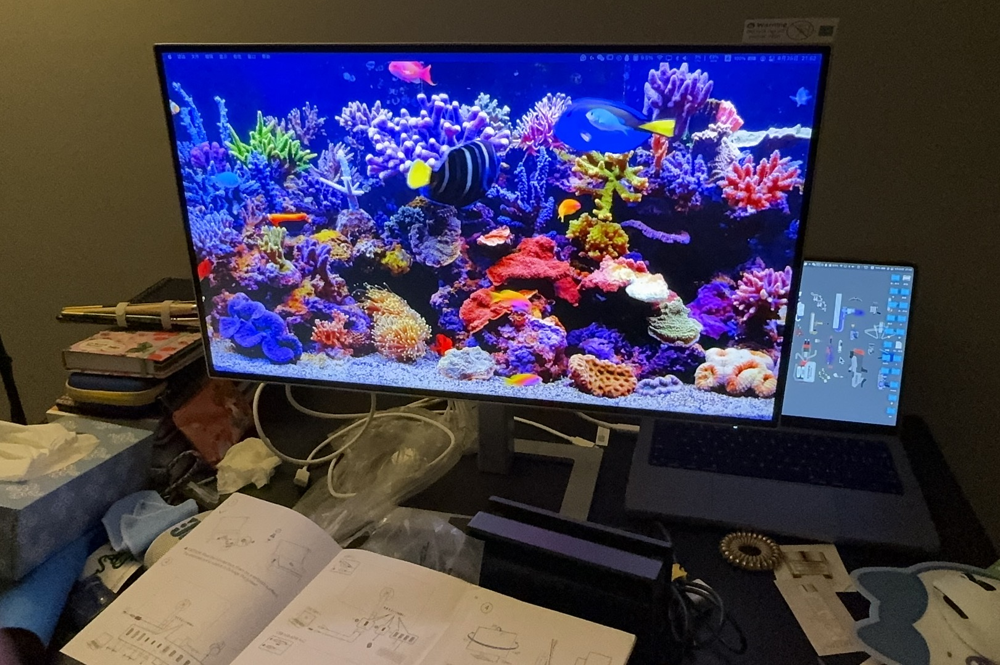

Desktop Setup

No matter how much I hesitated and how hard it was to get and keep a display during moving, I knew I had to buy a display screen for digital drawing and 3D making. When I unboxed, connected all the cables, and put it on the messy table, now I feel like I can do everything back at home, even when it's catastrophe coming outside and zombie is walking.
I guess from this moment on, the display is going to be the main reason I can get up and stay sitting at the desk, instead of me typing in bed all the time. That was also the reason I could stay focused back at home—the only difference was that I had the monitor in a seperate room, which forced me to physically move to another spot to start my day.
One thing that is always a double-blade, is because since the monitor is used both for work and entertaining, sometime it becomes hard to tell what I'm actually spending my time on. Because of that, I try to ignore the physical presence of the screen itself and focus only on its function. Still...I hope I won't end up spending most of time playing Animal Crossing and Splatoon here.